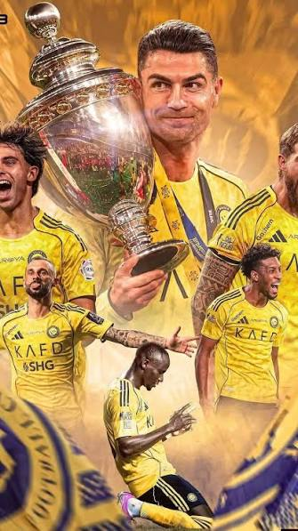
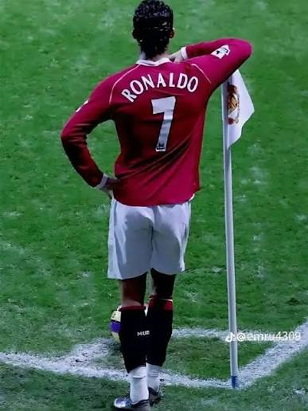

# **⚽ Cristiano Ronaldo haqida**
[Cristiano Ronaldo na Arábia Saudita? Craque pode ser 'embaixador' em candidatura à Copa de 2030 e faturar R$ 2,5 bilhões em contrato - ESPN](https://images.openai.com/static-rsc-4/sJgpeE5nPRSX-f3eSlISeCwhIiC-1dftj3dcWpBKC3pofmlOM5Pc04tSPFrtd37FS1CV5NafVQVxRBakKboC9MTEY9VjkllULvLe_1C_93-H6cDf6SGOWH1ah8YTtOnjL54FnAFxRQTbE34svqKe0dBiHuI-5EBdI_CwXbE5GF0?purpose=inline)
[espn.com.br](https://www.espn.com.br/futebol/mercado-da-bola/artigo/_/id/11303082/cristiano-ronaldo-na-arabia-saudita-embaixador-copa-do-mundo-2030-contrato-rs-25-bilhoes?utm_source=chatgpt.com)
Cristiano Ronaldo — 1985-yil 5-fevralda Portugaliyaning Funchal shahrida tug‘ilgan mashhur futbolchi. Uning to‘liq ismi Cristiano Ronaldo dos Santos Aveiro. U 7-raqam ostida hujumchi sifatida o‘ynaydi.
Ronaldo Sporting, Manchester United, Real Madrid, Juventus va Al-Nassr klublarida to‘p surgan.
Uning asosiy yutuqlari:
- 5 marta «Oltin to‘p»ni qo‘lga kiritgan.
- 5 marta Chempionlar ligasida g‘olib bo‘lgan.
- 2016-yilda Portugaliya bilan Yevropa chempioni bo‘lgan.
- Ko‘plab gollar va rekordlar muallifi.
Ronaldo o‘zining tezligi, kuchli zarbalari, sakrash qobiliyati va mehnatsevarligi bilan mashhur. Uning mashhur laqabi **CR7**. U dunyo bo‘ylab millionlab futbol muxlislariga o‘rnak bo‘lib kelmoqda. ranaldo kanaliga otish


Cristiano Ronaldo haqida:
- **Tug‘ilgan joyi:** Funchal shahri, Madeyra oroli, Portugaliya.
- **Yashash joyi:** Saudiya Arabistoni, Ar-Riyod shahri.
- **Hozirgi klubi:** Al-Nassr.
- **Lokatsiyasi:** Ar-Riyod, Saudiya Arabistoni. 🇸🇦
[OnGreen | Transforming MENA Through Green Technology](https://images.openai.com/static-rsc-4/J7KdC5Rp2J9QpJ6_UpxK8j3ErbLlOwMspHJFbbIMc7GVpIw565nu-vLCA6XSAgU234FK045gOD4Ykt_2J-O-BYxM-kDQ_35-rTJwRH85qZI93ou0jQQxhVujbqCT5Y9QQ_L_S9jofxAeep-5MWRlfUO0SKFCV1PSsoMAMxsCiZs?purpose=inline)
[ongreen.world](https://ongreen.world/about?utm_source=chatgpt.com)
**Eslatma:** Uning aniq uy manzil.